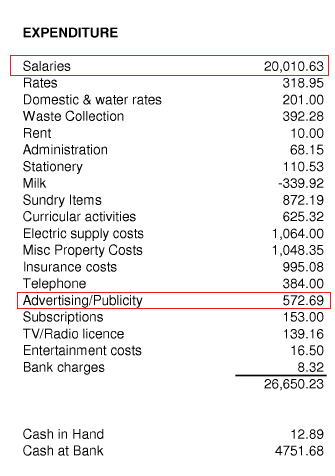
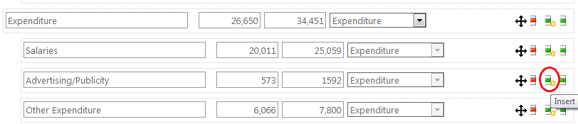
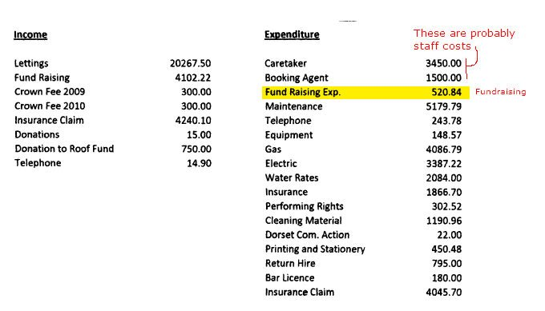
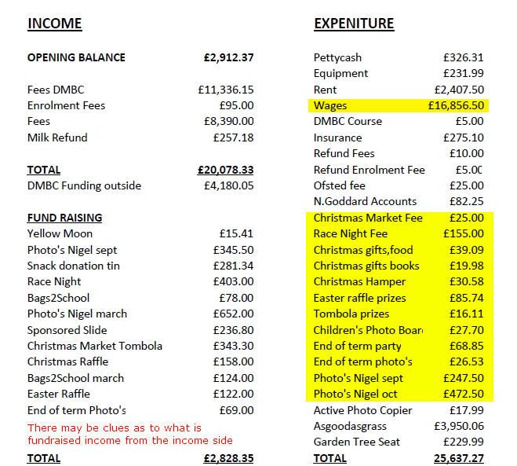

Receipts and Payments#
Charities with an income of less than £100k can submit receipts and payments accounts, which simply list all income and expenditure rather than subtotals under the standard SORP headings.
Data Entry Rules:#
Income / Receipts#
- Enter every line as Incoming Resources, for cleaning.
- These accounts are not likely to have detailed notes to the accounts, but we still need to know where money such as grants etc come from. These may be listed or mentioned separately in the accounts document, which is usually brief.
- If possible breakdown any lines that say "Grants" by the funder - e.g Somewhere District Council, or The Something Trust
Expenditure / Payments#
Under expenditure - enter any lines of the following types separately:
- "Fundraising" or anything similar and events such as Fete, raffle, ball etc.
- Any lines that include "advertising" or "publicity"
- Audit fees / Accounting fees / professional examiners fees
- Trustee expenses
- Wages, staff costs, salaries or similar - e.g a specific job title like "Caretaker"
- Details of any grants made to other charities.
All remaining expenditure should be entered as "Charitable activities" you do not need to itemise each item - you can use the "add remaining sibling" button.
In the below example:

You can opt to only enter the rows circled in red above, and use the "insert balanced row button" to insert an "other expenditure" item as below.
This should save time when entering small charity accounts, and avoid capturing unneccessary detail.

Some Further guidance about expenditure detail.#
The two examples below show the appropriate level of detail to add for payments. For the village hall below, you should enter the rows "Fund Raising Exp" - and also the Caretaker and Booking Agent as these are probably staff costs. Maintenance may or may not be a staff cost. Unfortuately this is to some extent subjective - it is not possible to know whether this was provided by a paid employee or by a tradesman/building firm trading as a business.

In the example below, as well as "wages" for the expenditure line, we would also like to try and capture the total amount of expenditure on fundraising events - i.e those lines highlighted in yellow. We do not need a breakdown for each item, but it may be easier to enter them all separately, because then the form will do the maths.
In this instance the income items under "Fund Raising" give some clue as to what items of expenditure were for fundraising purposes - i.e those that are similar to headings under the income lines. Again this is subjective, and requires the technician to make a judgement call, based on their growing understanding/experience of looking at these accounts.

Known problems:#
- Scout groups listing net rather than gross capitation.